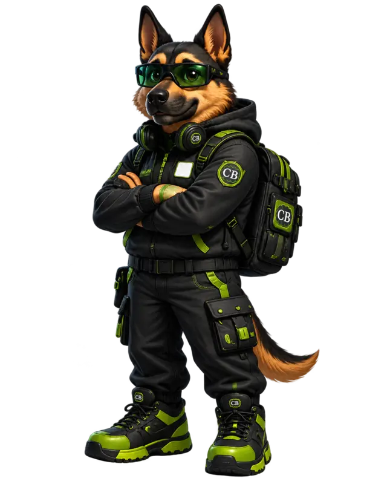

Чек-лист 05 із 14
Сайт без пасток
05
Коротка перевірка сайту перед онлайн-покупкою, оплатою або введенням фінансових даних.

Кіберпес · Перевір безпеку
«Знайомий дизайн і значок замка не доводять, що сайт справжній. Перевір адресу, джерело посилання та дані, які в тебе просять.»
Самоперевірка
Познач, що вже перевірено
0 із 8 виконано
Зверни увагу: HTTPS захищає з’єднання, але сам по собі не підтверджує чесність сайту.
CASHBRAIN радить: Якщо хоча б один критичний пункт викликає сумнів, не вводь дані картки і не продовжуй оплату, доки не перевіриш інформацію незалежно.
Закріпи навичку